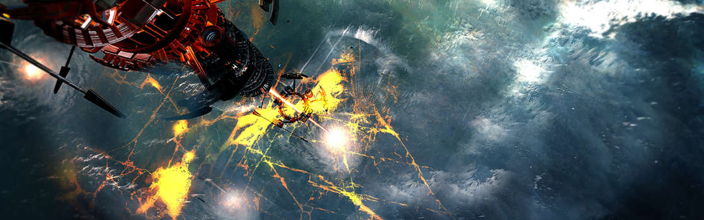

SYSTEM: TAYAC

Excurs - System: Tayac
Als ein einfaches System mit einer komplizierten Vergangenheit hat Tayac über vier Jahrhunderte, in denen wir das System besetzt hielten, das Beste und Schlechteste in den Menschen hervorgebracht. Entdeckt wurde es im ‚Eastern Expansion Program͚ des frühen 26. Jahrhundert. Das Klasse-G Hauptreihensternsystem wurde zum ersten Mal von einem UPE-Piloten im Jahr 2524 besucht, der den Sprungpunkt von Terra nach Nexus näher untersucht hatte. Mit drei Planeten und einem Asteroidengürtel wurde das System, bekannt als 368A, von den Vermessern für eine kommerzielle Entwicklung eingestuft, der innerste Planet wurde als Terraforming-Kandidat vermerkt.
Aufgrund der Schar neuer Systeme, die während des Jahrzehnts der Expansion entdeckt worden sind, wuchs der Rückstau an Planeten, die darauf warteten, terraformt zu werden, da die Finanzierung und die nötigen Ressourcen beansprucht wurden, sobald sie budgetiert waren. Erst im Jahr 2539 wurde mit dem Terraforming in Form einer Orbitalanlage auf 368A.01M (Tayac I) begonnen. Allerdings startete vor dessen Fertigstellung im Jahr 2541 der erste offizielle inter-spezies Krieg in der Geschichte der Menschheit. Als der Kampf gegen die Tevarin heftiger wurde, wurden alle unnötigen Projekte beendet, um sich darauf konzentrieren zu können, die Kriegsanstrengungen und die Schlagkraft der Flotte zu erhöhen. Das Terraforming von Tayac I war eines dieser Projekte, das von den Kürzungen betroffen war.
Das System blieb bis zum Ende des Krieges und dem Aufstieg von Ivar Messer in der Rolle als Imperator relativ unangetastet. Durch die Erweiterung der Kontrolle des Imperiums durch Messer wurde Tayac zu einer Militärzone, die für den zivilen Verkehr gesperrt war. Alle bekannten Sprungpunkte zu diesem System wurden vom Militär abgeriegelt. Erst Jahrhunderte später, nachdem die Herrschaft des Messer-Regimes zu Ende ging, wurde vollständig bekannt, was dort wirklich vor sich ging, während es völlig von der Öffentlichkeit abgeschirmt war.
Eines dieser Projekte mit dem Codenamen Vespa war die Idee von Dr. Thessaly Tayac, der glaubte, dass die Terraforming-Technologie auch für Waffenzwecke benutzt werden könnte. Das nur zur Hälfte abgeschlossene Terraforming von 368A.01M wurde als perfekte Testumgebung ausgewählt und im Jahr 2546 wurde der kleine felsige Planet Dr. Tayac für Forschungszwecke freigegeben. Für die nächsten Jahrzehnte wurde der Planet systematisch terraformt und dann wieder „de-terraformt“, bis schlussendlich ein Planet mit sehr gutem Potential in einen öden Fels mit keinerlei Atmosphäre verwandelt worden war.
Obwohl Dr. Tayac den Terraformingprozess erfolgreich umkehren konnte, konnte sein Team die Technologie nicht in eine Waffe umwandeln. Es gab zwei Probleme: Größe und Zeit. Die Orbitalplattform, welche für die Destabilisierung der planetaren Biosphäre benötigt werden würde, hätte eine stattliche Größe. Es war unmöglich, sich ein Szenario vorzustellen, in dem die Navy eine solche Plattform während eines Gefechts sicher über einer feindlichen Welt positionieren könnte.
Und selbst wenn sie es jemals schaffen würden, die Plattform in eine passende Position zu bringen, wäre der Destabilisierungsprozess viel zu langwierig. Bis zu Dr. Tayacs Ableben wurden bemerkenswerte Fortschritte erzielt, jedoch nicht genug, um das Projekt einem tatsächlichen Nutzen zuzuführen. Nach dem Tod des Doktors wurden die Zügel des Projekts Vespa weitergegeben und die Arbeit in dem System fortgeführt, das zu dieser Zeit in der Navy gemeinhin als „Tayac“ bekannt war. Obwohl Generationen über Generationen von Messers darauf hofften, dass Vespa Früchte tragen würde, blieben die Hürden einfach unüberwindbar. Im Jahr 2750 war Tayac I durch die Experimente so instabil geworden, dass es nicht weiter terraformt werden konnte und das Interesse an dem Projekt verlief sich im Sande wie seine Finanzierung.
Vespa wurde offiziell eingestellt und das Tayac System beinahe aufgegeben. Es dauerte aber nicht lang, bis sich die politischen Winde des Imperiums drehten und die Messers stürzten. In den darauf folgenden Unruhen wurden auch Dr. Tayacs Experimente öffentlich bekannt. Es war nicht nur eine schockierende Enthüllung dessen, wozu die Messers tatsächlich fähig waren, sondern belastete zusätzlich das ohnehin sehr fragile Friedensabkommen, das gerade erst mit den Xi͛An getroffen worden war. Als ein Zeichen des Vertrauens und als Versicherung, dass das alte Imperium der Vergangenheit angehört, teilte Imperator Toi alle Forschungsergebnisse des Projekts Vespa mit der Xi͛An-Regierung, schwörend, dass man diese Technologie nie wieder weiterverfolgen würde. The
Die ursprüngliche Konstruktion wurde im Jahr 2800 abgeschlossen und von Anfang an enthielt die Arche eine der größten öffentlichen Bibliotheken und Archivbestände im bekannten Universum. Aufgrund der fehlenden bewohnbaren Planeten in diesem System, wurde die Arche zum Zentrum der Aktivitäten in Tayac, mit Wissenssuchenden und auf sie ausgelegte Dienstleistungen rund um die Bibliothek. Obwohl sich die Arche noch nie bewegt hat, gibt es Gerüchte, dass sie sich im Hinblick auf ihr zweihundertjähriges Fertigstellungsjubiläum vielleicht zum ersten Mal auf ihre Reise durch die Sterne begeben könnte, so wie es Imperator Leon ursprünglich vor all diesen Jahren vorgeschlagen hatte. Alle, die die Arche noch besuchen möchten, sollten das jetzt tun, solange man den Vorteil hat, sie an einem semi-permanenten Standort finden zu können.
„Diese Arche soll als Testament und stolze Aufzeichnung für die Leben dienen, die wir führen und alle vor uns bereits geführt haben.“ – Imperator Marshall Leon, Galaveranstaltung zu Ehren der Arche, 2800
Aufgrund der Schar neuer Systeme, die während des Jahrzehnts der Expansion entdeckt worden sind, wuchs der Rückstau an Planeten, die darauf warteten, terraformt zu werden, da die Finanzierung und die nötigen Ressourcen beansprucht wurden, sobald sie budgetiert waren. Erst im Jahr 2539 wurde mit dem Terraforming in Form einer Orbitalanlage auf 368A.01M (Tayac I) begonnen. Allerdings startete vor dessen Fertigstellung im Jahr 2541 der erste offizielle inter-spezies Krieg in der Geschichte der Menschheit. Als der Kampf gegen die Tevarin heftiger wurde, wurden alle unnötigen Projekte beendet, um sich darauf konzentrieren zu können, die Kriegsanstrengungen und die Schlagkraft der Flotte zu erhöhen. Das Terraforming von Tayac I war eines dieser Projekte, das von den Kürzungen betroffen war.
Das System blieb bis zum Ende des Krieges und dem Aufstieg von Ivar Messer in der Rolle als Imperator relativ unangetastet. Durch die Erweiterung der Kontrolle des Imperiums durch Messer wurde Tayac zu einer Militärzone, die für den zivilen Verkehr gesperrt war. Alle bekannten Sprungpunkte zu diesem System wurden vom Militär abgeriegelt. Erst Jahrhunderte später, nachdem die Herrschaft des Messer-Regimes zu Ende ging, wurde vollständig bekannt, was dort wirklich vor sich ging, während es völlig von der Öffentlichkeit abgeschirmt war.
Tayac I
Ivar Messer war erpicht darauf, Waffen zu entwickeln, die dem Imperium ermöglichten, zukünftige Konflikte schnell und mit minimalen Militärverlusten zu beenden, nachdem er sich, vor allem durch seine eigenen Erfahrungen an der Front, über den hohen Preis des Tevarin-Krieges klar wurde. Unter seiner Herrschaft wurden Dutzende strenggeheimer Blacklist-Initiativen, Pläne und Forschungsprojekte für Massenvernichtungswaffen aufgestellt und großzügig finanziert.Eines dieser Projekte mit dem Codenamen Vespa war die Idee von Dr. Thessaly Tayac, der glaubte, dass die Terraforming-Technologie auch für Waffenzwecke benutzt werden könnte. Das nur zur Hälfte abgeschlossene Terraforming von 368A.01M wurde als perfekte Testumgebung ausgewählt und im Jahr 2546 wurde der kleine felsige Planet Dr. Tayac für Forschungszwecke freigegeben. Für die nächsten Jahrzehnte wurde der Planet systematisch terraformt und dann wieder „de-terraformt“, bis schlussendlich ein Planet mit sehr gutem Potential in einen öden Fels mit keinerlei Atmosphäre verwandelt worden war.
Obwohl Dr. Tayac den Terraformingprozess erfolgreich umkehren konnte, konnte sein Team die Technologie nicht in eine Waffe umwandeln. Es gab zwei Probleme: Größe und Zeit. Die Orbitalplattform, welche für die Destabilisierung der planetaren Biosphäre benötigt werden würde, hätte eine stattliche Größe. Es war unmöglich, sich ein Szenario vorzustellen, in dem die Navy eine solche Plattform während eines Gefechts sicher über einer feindlichen Welt positionieren könnte.
Und selbst wenn sie es jemals schaffen würden, die Plattform in eine passende Position zu bringen, wäre der Destabilisierungsprozess viel zu langwierig. Bis zu Dr. Tayacs Ableben wurden bemerkenswerte Fortschritte erzielt, jedoch nicht genug, um das Projekt einem tatsächlichen Nutzen zuzuführen. Nach dem Tod des Doktors wurden die Zügel des Projekts Vespa weitergegeben und die Arbeit in dem System fortgeführt, das zu dieser Zeit in der Navy gemeinhin als „Tayac“ bekannt war. Obwohl Generationen über Generationen von Messers darauf hofften, dass Vespa Früchte tragen würde, blieben die Hürden einfach unüberwindbar. Im Jahr 2750 war Tayac I durch die Experimente so instabil geworden, dass es nicht weiter terraformt werden konnte und das Interesse an dem Projekt verlief sich im Sande wie seine Finanzierung.
Vespa wurde offiziell eingestellt und das Tayac System beinahe aufgegeben. Es dauerte aber nicht lang, bis sich die politischen Winde des Imperiums drehten und die Messers stürzten. In den darauf folgenden Unruhen wurden auch Dr. Tayacs Experimente öffentlich bekannt. Es war nicht nur eine schockierende Enthüllung dessen, wozu die Messers tatsächlich fähig waren, sondern belastete zusätzlich das ohnehin sehr fragile Friedensabkommen, das gerade erst mit den Xi͛An getroffen worden war. Als ein Zeichen des Vertrauens und als Versicherung, dass das alte Imperium der Vergangenheit angehört, teilte Imperator Toi alle Forschungsergebnisse des Projekts Vespa mit der Xi͛An-Regierung, schwörend, dass man diese Technologie nie wieder weiterverfolgen würde. The
Ark / Die Arche
Nachdem sich die Regierung weiter vom vorherigen Regime distanziert hatte, schlug Imperator Marshall Leon vor, dass nach Jahrzehnten des Misstrauens und Krieges ein Leuchtturm des Friedens nötig sei, um die Völker des Universums zu vereinen. Seine Idee wurde zu dem, was später als „die Arche“ bekannt werden sollte, ein Verwahrungsort für umfassendes Wissen und ein sicherer Ort für diplomatische Diskussionen zwischen den Völkern. Es gab viele Vorschläge, wo die Arche beheimatet sein sollte, aber am Ende wurde Tayac I ausgewählt, um zu symbolisieren, wie großartige Werke Hoffnung und Licht über die Schatten unserer Vergangenheit gießen können.Die ursprüngliche Konstruktion wurde im Jahr 2800 abgeschlossen und von Anfang an enthielt die Arche eine der größten öffentlichen Bibliotheken und Archivbestände im bekannten Universum. Aufgrund der fehlenden bewohnbaren Planeten in diesem System, wurde die Arche zum Zentrum der Aktivitäten in Tayac, mit Wissenssuchenden und auf sie ausgelegte Dienstleistungen rund um die Bibliothek. Obwohl sich die Arche noch nie bewegt hat, gibt es Gerüchte, dass sie sich im Hinblick auf ihr zweihundertjähriges Fertigstellungsjubiläum vielleicht zum ersten Mal auf ihre Reise durch die Sterne begeben könnte, so wie es Imperator Leon ursprünglich vor all diesen Jahren vorgeschlagen hatte. Alle, die die Arche noch besuchen möchten, sollten das jetzt tun, solange man den Vorteil hat, sie an einem semi-permanenten Standort finden zu können.
Tayac II
Tayac II, ein massiver Gasgigant, ist für seine ehrfurchtgebietende planetaren Ringe bekannt, die zu den dichtesten im UEE-Gebiet zählen. Die dunklen Linien sorgen für einen visuell anziehenden Kontrast zu der hellen Atmosphäre des Planeten, den sie umgeben.Tayac Asteroidengürtel Alpha
Das einzige Nennenswerte dieses kargen Asteroidengürtels mit wenigen Ressourcen ist eine umkreisende Kunstinstallation, die zur Feier des 100. Geburtstags der Arche beauftragt wurde. Das Projekt wurde im Jahr 2900 fertiggestellt, ist als Silent Song („Stilles Lied“) bekannt und stellt die erste gemeinsame Bemühung zwischen dem menschlichen Künstler Yosef Colt, dem Xi͛An Künstler Aor und dem Banu Erfindungsteam dar, die für ein ganzes Jahrzehnt zusammenlebten und arbeiteten. Einige sagen sogar, dass dieses Zusammenleben eine beeindruckendere Leistung ist als die Installation an sich.Tayac III (Shepherd)
Der Zwergplanet umkreist eng den Asteroidengürtel und hat sich seinen Spitznamen dafür verdient, ein scheinbar wachsames Auge auf eine Herde Asteroiden zu haben. Es wird spekuliert, dass der Planet ursprünglich Teil des Gürtels war, bevor er mit Teilen der Herde verschmolz und sich dann von deren Resten getrennt hat. Reisewarnung Eine Mahnung ist angebracht, da die Arche und ihre unmittelbare Umgebung entsprechend des Arche-Vertrags als neutraler Raum betrachtet wird und die UEE dort keine Gerichtsbarkeit besitzt. Flüstern im WindEin Flüstern im Wind
„Wir konnten den Prozess ganze sechs Stunden aufrechterhalten. Eine beachtliche Leistung ungeachtet dessen, wie weit wir noch gehen müssen, bevor sich unser Bemühen selbst als nützlich erweist. Ein sehr lohnenswertes Bemühen, möchte ich hinzufügen, da all unsere Anstrengungen hier nichts im Vergleich zu seinem wahren Potential sind, die Leben unserer Bürger auf anderen Sternen zu sichern.“ – Dr. Tayac, Projekt Vespa Fortschrittsbericht, 03.06.2572„Diese Arche soll als Testament und stolze Aufzeichnung für die Leben dienen, die wir führen und alle vor uns bereits geführt haben.“ – Imperator Marshall Leon, Galaveranstaltung zu Ehren der Arche, 2800